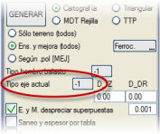
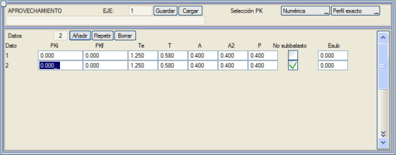
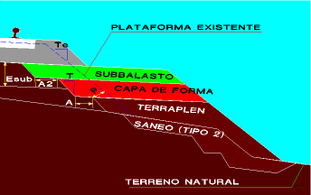

Bu
menü, yanal bir genişletme veya her iki taraftan bir genişletme
yapmak için mevcut bir platformun tamamından veya bir kısmından nasıl
faydalanılabileceğini bölümler halinde tanımlamaya olanak tanır.
Arazi
profili, omuza kadar mevcut balast yüzeyini içeren seçeneklerle
çıkarılmalıdır. Bu nedenle, hat platformundan faydalanmak için
profillerin çıkarılması, genişletme ve iyileştirme
projelerindekine benzerdir; farkı, beyan edilecek çizgi tipinin balast
omuzuna karşılık gelmesi ve ayrıca bir referans çizgisine olan
mesafenin kabul edilmesidir.
Ayrıca, mevcut ekseni temsil eden çizgi tipini seçme imkanı da ortaya çıkar. Eğer geçerli bir tip seçilirse, enkesitlere mevcut eksenin konumunda S196 sembolü eklenir.

Her faydalanma bölümünde şunlar tanımlanır:
- Verilerin uygulanacağı bölüm (Baş. KM, Bit. KM).
- Mevcut platformun balastının teorik şevi (Te).
- Dolgu, seçilmiş malzeme, koruyucu tabaka ve subbalast basamaklarının şevi (T).
- Koruyucu tabakanın tabanındaki basamağın genişliği (A).
- Subbalastın tabanındaki basamağın genişliğidir (A2).
- Mevcut balastın kazıldığı minimum mesafe (P).
Son olarak, aşağıdaki hususlar dikkate alınmalıdır:
- Projelendirilen balast tamamen oluşturulur.
- Mevcut subbalasttan faydalanmak istenmiyorsa subbalast yok seçeneği etkinleştirilmelidir.
- Mevcut platformdan subbalast açısından faydalanılmaması
durumunda, orta bölgede yanlardan daha büyük bir subbalast kalınlığı
tanımlanabilir ve bu, koruyucu tabakanın bir kısmının yerini alır (Esub).
- Dolgu kazısı için, burada girilen verilerle tutarlı genişliklere ve basamak şevlerine sahip tip 2 bir kazı kullanılması önerilir.
- Eksen kutucuğu:
Eğer faydalanma bölümüne önceden hesaplanmış bir eksenin numarasını
yazarsak, yeni platform, referans verilen eksenin platformundan (balast,
subbalast, koruyucu tabaka, dolgu...) tamamen faydalanarak oturur.
ISPOLn.per profilinde, 67 ve 68 yüzeylerinin orijinal geometrisiyle iki
yeni yüzey eklenir; bu yüzeyler, üstyapı paketleri menüsünden bazı
katmanlar tanımlandığında kullanılır.
|